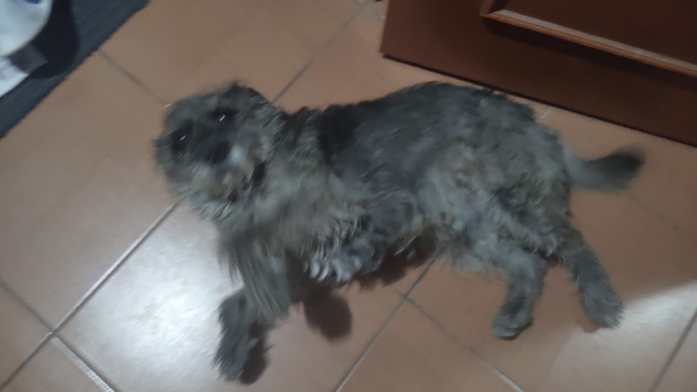
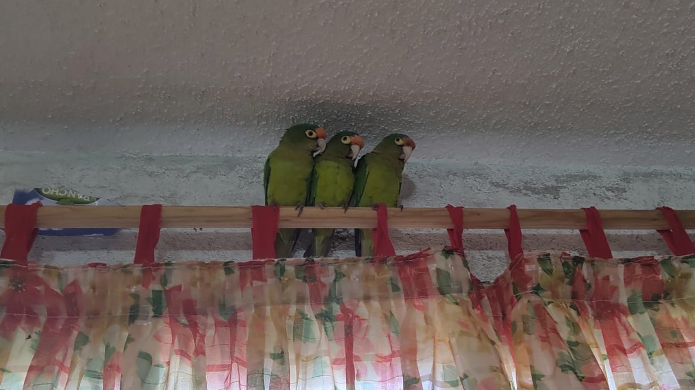

|
SashaDueño: IvanSaha es un gato negro de ojos verdes con una edad aproximada de 13 años. Encontrada entre paredes de casas distintas, la escuchamos maullar débilmente una noche a finales de agosto. Desde entonces ha estado con nosotros. De todas las cosas que le sucedieron, la que más nos duele y a la vez nos hizo tomarle más cariño fue cuando desapareció por un mes completo y regreso muy delgada a comparación de como se había ido Con el paso del tiempo su temperamento cambio mucho, de ser enojona y agresiva al principio, a ser más dócil y tranquila actualmente. |
NozomiDueño: YahirNozomi es un perro color "humo" de 8 años aproximadamente, cruza de schnauzer. Nozomi fue peculiar desde que lo adoptamos, se lo regalaron a mi hermano en una ocasión que andaba por Coyoacán, el ultimo de sus hermanitos. Nozomi significa esperanza, pero se le puso ese nombre por una confusión de significados y al final se le quedo. Un perro muy cariñoso, pero tambien muy celoso, no puedes andar con otra mascota porque va corriendo a donde estas y se tira al suelo para pedir cariño, a pesar de todo se le quiere y se le cuida a la par que el gato |
 |
Los pericosDueño: todavía por definirPopeye, Ñañito y Ñañita, los nombres que le dio su anterior dueño. Periquitos atoleros Recién llegados, su anterior dueño nos los dejo porque debido a su estilo de vida, ya no podría prestarles tanta atención como antes A pesar de tener poco tiempo mi madre ya les tomo mucho cariño pues quería periquitos. Se están adaptando apenas a la casa, al igual que al clima Son bastante gritones, pero ayudan a que la casa no se sienta ni vacía ni callada, lo cual alegra a todos, a Sasha parecen disgustarle del todo, pero Nozomi parece que los ve más como una especie de bocado volador. |  |